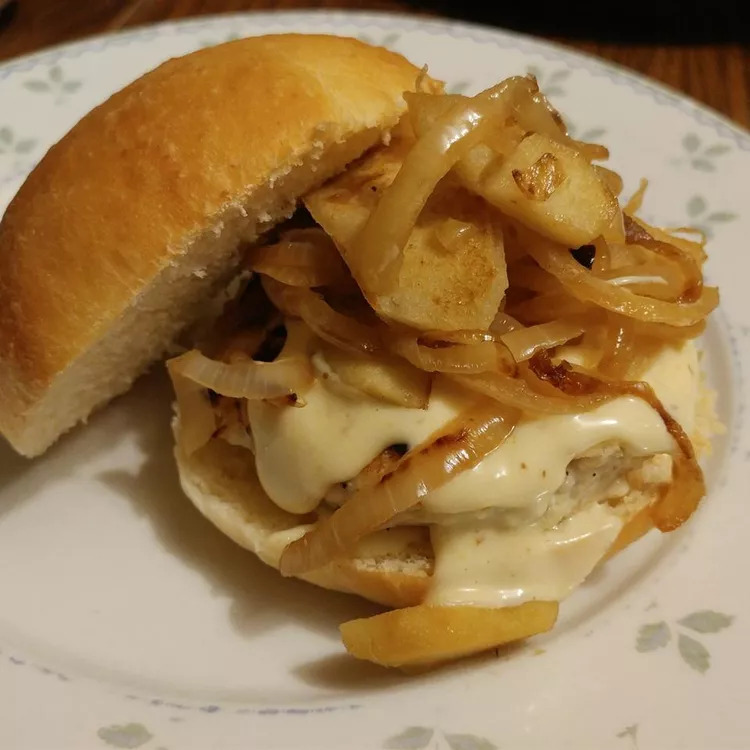

Maple Apple Chicken Burgers

Description
Chicken burgers topped with grilled Granny Smith apples and onions.
Topped with a sauce similar to a mild honey mustard, but using real
maple syrup instead of honey. We use the Burger or Hot Dog Buns recipe
from this site to make our own burger buns, but you could substitute a
potato hamburger bun from the grocery store.
Ingredients
- ¼ cup mayonnaise
- 2 tablespoons real maple syrup
- 1 tablespoon Dijon mustard
- canola oil
- 1 onion, sliced
- 1 Granny Smith apple - peeled, cored, and chopped
- 1 pound ground chicken
- 2 tablespoons real maple syrup
- 1 teaspoon Italian seasoning
- 1 egg
- ½ teaspoon salt
- ¼ teaspoon pepper
- 6 tablespoons canola oil, divided
- 6 hamburger buns, split
Steps
- Make the 'secret sauce' by whisking the mayonnaise, 2 tablespoons maple syrup, and the Dijon mustard together in a small bowl; set aside.
- Heat 2 tablespoons canola oil in a skillet over medium heat; cook and stir the onion and about half the chopped apple in the hot oil until soft, 7 to 10 minutes. Set aside.
- Mix the remaining uncooked apple, the ground chicken, 2 tablespoons maple syrup, Italian seasoning, egg, salt, and pepper together in bowl. Shape the burger mixture into 6 balls; the mixture will be loose, but that is okay.
- Heat 1 tablespoon canola oil in a large skillet over medium heat. Place one of the balls into the hot oil and flatten with the back of spoon to create a patty. Cook until slightly brown on one side and then flip and cook the other side until cooked through, 5 to 7 minutes per side; repeat for each portion.
- To assemble, place the chicken burgers on buns; top with the grilled apple and onions. Pour some secret sauce over the top of each burger. More secret sauce can be served on the side if desired.